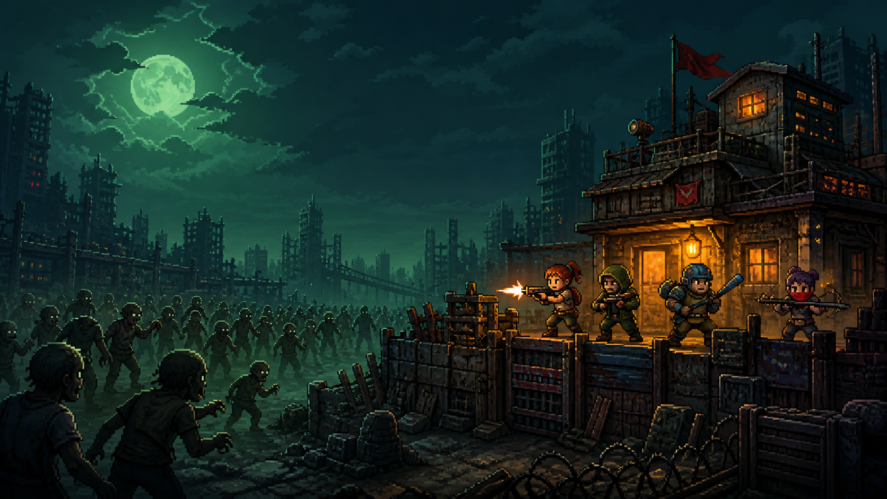

FARM AFK
Ao fechar o jogo, o esquadrão continua lutando por até oito horas. No retorno, um relatório mostra eliminações, ondas, sucata, experiência, itens e baús encontrados.
- Limite de 8 horas
- Respeita o mapa fixado
- Pets e runas aumentam o resultado

RPG IDLE DE SOBREVIVÊNCIA PARA WINDOWS
Escolha três entre quatorze sobreviventes em uma guerra contínua contra hordas infectadas. Monte builds, encontre equipamentos e continue farmando por até oito horas enquanto estiver longe.
Escolha uma equipe de três. Cada campeão possui atributos, três habilidades, cinco talentos e prioridades próprias de equipamento. O autobalanceamento mantém heróis e itens dentro da curva de poder, e seis formações recomendadas cobrem dano, defesa, controle, chefes e farm AFK.
Especialista em dano rápido. Sua alta velocidade de ataque, rajadas e marcação de alvos fazem dela a melhor escolha para eliminar inimigos prioritários.
Deadshift combina combate automático com decisões de build. Você escolhe onde farmar, quem equipar e como investir cada recurso.
Ao fechar o jogo, o esquadrão continua lutando por até oito horas. No retorno, um relatório mostra eliminações, ondas, sucata, experiência, itens e baús encontrados.
Fixe qualquer fase liberada e repita automaticamente para buscar DPS, Tank, Cura, itens da Iris ou uma raridade específica.
Invista pontos obtidos em chefes numa rede permanente de dano, vida, velocidade, crítico, farm offline, baús e eficiência do Cubo.
Crie armas, proteções e amuletos para uma classe específica ou sintetize nove itens da mesma raridade em um item superior.
Baús de Campo, Militares e de Surto entregam quantidades e raridades diferentes. Chefes e expedições aumentam suas chances.
Rotas permanentes melhoram dano, velocidade, obtenção de baús e recompensas contra chefes durante toda a campanha.
Resgate e treine companheiros ofensivos, defensivos, táticos ou coletores. Cada pet indica sua habilidade e os campeões com melhor sinergia.
Cada mapa possui dez níveis, inimigos próprios, um chefe e uma especialidade de loot. Termine os cinco para liberar o próximo modo.
Ruas tomadas por errantes, corredores e demolidor blindado.
Uma estrada em chamas com explosivos, saqueadores e abutres.
Túneis alagados, tóxicos, sanguessugas e criaturas regeneradoras.
Carbonizados, forjadores, explosivos e espectros de cinzas.
Protótipos congelantes, mutantes de fase e aberrações ácidas.
O assistente compara cada item com o equipamento atual, calcula a melhoria percentual e indica o campeão que mais aproveita seus atributos.
Aumenta ataque, velocidade e crítico. DPS aproveitam melhor.
Concede vida, defesa e sustentação. Essencial para Bruno e linha de frente.
Combina atributos especiais, cura, sucata e bônus de suporte.
Ataque, velocidade e crítico para Maya.
Vida, bloqueio e defesa para Bruno.
Poder de cura e suporte para Yuri.
Dano de área e fogo para Iris.
Inimigos possuem comportamento e alcance próprios. Reconhecer a silhueta ajuda a entender quais campeões estão sob maior risco.
Um caminho simples para começar sem desperdiçar recursos.
Use Maya para dano inicial, recrute Bruno para proteger, Yuri para curar e Iris para controlar hordas.
Abra o Mapa, selecione uma fase segura e ative a repetição para a classe de item desejada.
Clique no cartão do herói e use a sugestão automática para preencher arma, proteção e amuleto.
Chefes concedem pontos. Comece por dano, vida ou velocidade e avance pelos requisitos conectados.
Escolha um companheiro pela função e combine sua habilidade com o campeão recomendado.
Antes de sair, fixe sua melhor fase de farm. Ao voltar, colete o relatório AFK.
Treina heróis, fabrica itens no Cubo e evolui pets.
Recurso raro concedido por chefes e avanços importantes da campanha.
Compram melhorias globais permanentes na Rede de Sobrevivência.
Guardam múltiplos equipamentos e possuem categorias de recompensa.
Aumenta nível, atributos e concede pontos para talentos individuais.
Desbloqueiam rotas passivas que fortalecem combate e recompensas.
Sim. O jogo salva automaticamente e também permite exportar um arquivo .deadshift para backup ou compartilhamento.
Não. O farm offline calcula até oito horas de progresso quando você retorna.
O jogo procura novas versões, baixa em segundo plano e instala automaticamente preservando o save.
O projeto é independente e ainda não possui reputação ampla no SmartScreen. Baixe sempre pela página oficial de lançamentos do GitHub.
Sim. Depois de conquistar um modo, você pode alternar entre todos os modos já liberados no Mapa de Operações.
Gratuito para Windows 10 e 11. Instale uma vez e receba as próximas versões automaticamente.
↓ BAIXAR O INSTALADOR 4.5.1